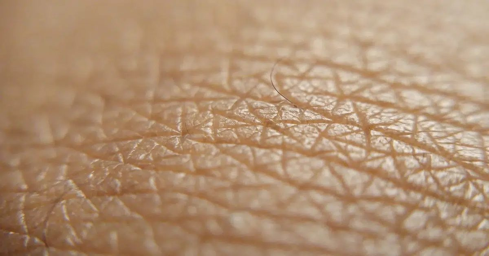

Биологи выяснили, что мужская и женская кожа обновляется по-разному
Половые гормоны влияют не только на репродуктивную систему, но и на способность кожи восстанавливаться после повреждений.
Как выяснили биологи, у самок мышей клетки кожи более согласованно делятся и созревают, что помогает объяснить более быстрое заживление ран по сравнению с самцами.